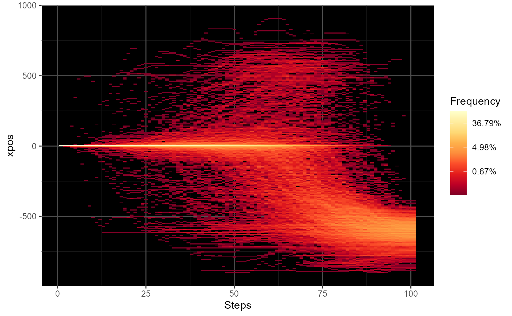

mt_plot_riverbed creates a plot showing the distribution of one
trajectory variable (e.g., the x-positions or velocity) per time step.
mt_plot_riverbed( data, use = "tn_trajectories", y = "xpos", y_range = NULL, y_bins = 250, facet_row = NULL, facet_col = NULL, facet_data = "data", grid_colors = c("gray30", "gray10"), na.rm = FALSE )
| data | mousetrap data object containing the data to be plotted. |
|---|---|
| use | character string specifying the set of trajectories to use in the plot. The steps of this set will constitute the x axis. Defaults to 'tn_trajectories', which results in time steps being plotted on the x axis. |
| y | variable in the mousetrap data object to be plotted on the output's y dimension. Defaults to 'xpos', the cursor's x coordinate. |
| y_range | numerical vector containing two values that represent the upper and lower ends of the y axis. By default, the range is calculated from the data provided. |
| y_bins | number of bins to distribute along the y axis (defaults to 250). |
| facet_row | an optional character string specifying a variable in
|
| facet_col | an optional character string specifying a variable in
|
| facet_data | a character string specifying where the (optional) data containing the faceting variables can be found. |
| grid_colors | a character string or vector of length 2 specifying the
grid color(s). If a single value is provided, this will be used as the grid
color. If a vector of length 2 is provided, the first value will be used as
the color for the major grid lines, the second value for the minor grid
lines. If set to |
| na.rm | logical specifying whether missing values should be removed. This is not done by default, because generally riverbed plots are generated from preprocess trajectories (e.g., time-normalized trajectories) that all have the same length (i.e., the same number of steps). |
This function plots the relative frequency of the values of a trajectory variable separately for each of a series of time steps. This type of plot has been used in previous research to visualize the distribution of x-positions per time step (e.g., Scherbaum et al., 2010).
mt_plot_riverbed usually is applied to time-normalized trajectory data
as all trajectories must contain the same number of values (if
na.rm=FALSE, the default).
Scherbaum, S., Dshemuchadse, M., Fischer, R., & Goschke, T. (2010). How decisions evolve: The temporal dynamics of action selection. Cognition, 115(3), 407-416.
Scherbaum, S., & Kieslich, P. J. (2018). Stuck at the starting line: How the starting procedure influences mouse-tracking data. Behavior Research Methods, 50(5), 2097–2110.
mt_plot for plotting trajectory data.
mt_time_normalize for time-normalizing trajectories.
Felix Henninger
Pascal J. Kieslich
# Time-normalize trajectories KH2017 <- mt_time_normalize(KH2017) # Create riverbed plot for all trials mt_plot_riverbed(KH2017)if (FALSE) { # Create separate plots for typical and atypical trials mt_plot_riverbed(mt_example, facet_col="Condition") # Create riverbed plot for all trials with custom x and y axis labels mt_plot_riverbed(mt_example) + ggplot2::xlab("Time step") + ggplot2::ylab("X coordinate") # Note that it is also possible to replace the # default scale for fill with a custom scale mt_plot_riverbed(mt_example, facet_col="Condition") + ggplot2::scale_fill_gradientn(colours=grDevices::heat.colors(9), name="Frequency", trans="log", labels=scales::percent) }